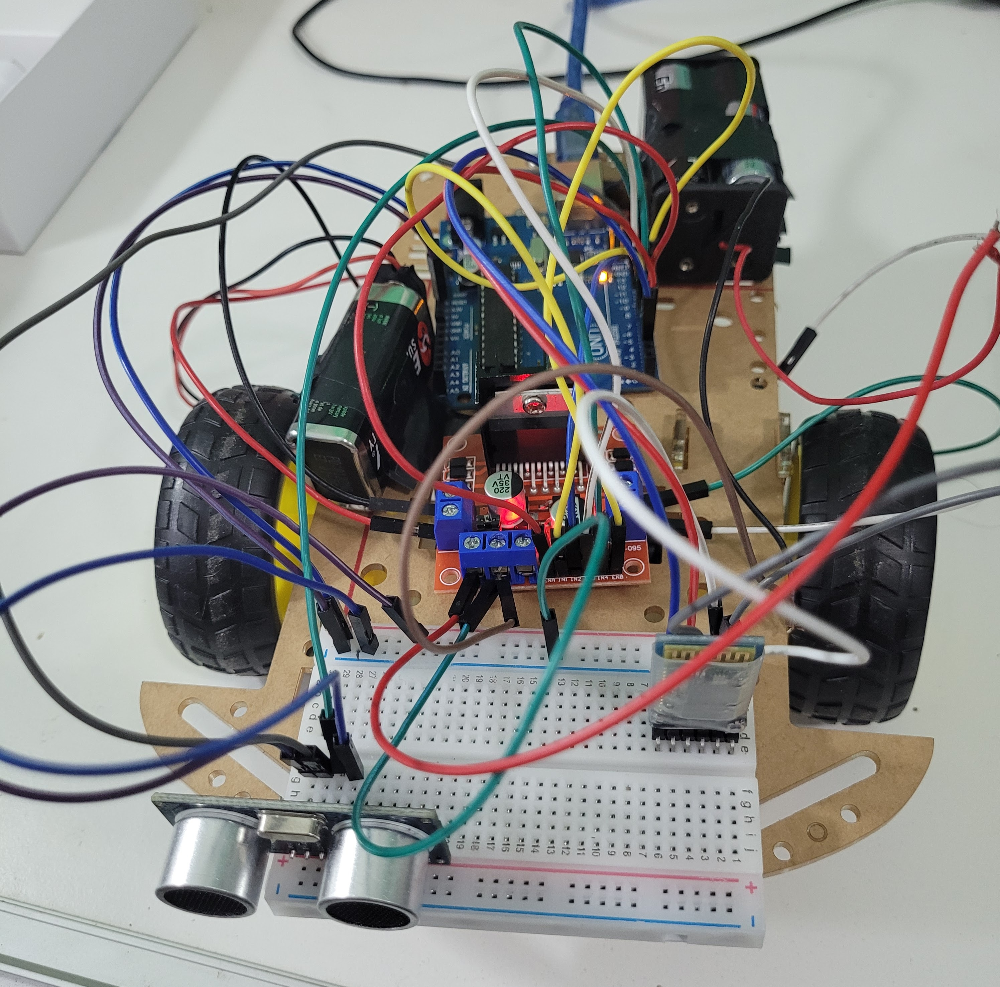
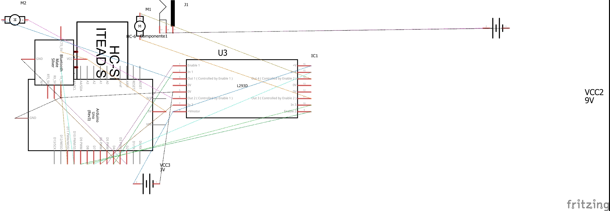

El presente trabajo se abarco en un tiempo de aproximadamente 1 mes. Los objetivos generales, que fueron planteados por el profesor, son: -Aprobar la catedra de informática VI de la Escuela Tegnologica Ingeniero Giudici (ETIG), dictada por el profesor Walter Cabañas (analista en sistemas). -Exponerlo en la feria de las 4 estaciones de la facultad de ingeniera (Universidad Nacional de Lomas de Zamora). Los objetivos específicos son adentrarse más en el tema de la robótica y aprender sobre el Arduino. Esto gracias a la experiencia práctica que se adquiriría al realizar este proyecto. Si se quiere mirar el proyecto más a fondo puede entrar a:
GitHubEl siguiente trabajo consta de tres partes: Programación; Aplicación y Construcción. La programación del auto fue realizado con arduino. Consta de 179 líneas de código. Esta hecho de manera ordenada con funciones y sencilla de leer (hay comentarios que especifican que hace cada cosa). Se usaron del Arduino Uno 8 pines digitales y 2 pines PMW (para el ENA y ENB del driver ‘Puente H L298N’). Este funciona enviándole por bluetooth los comandos típicos de los juegos de ordenador AWSD (izquierda, adelante, atrás y derecha). A la par que hacíamos eso, empezamos a hacer la aplicación controladora con python e hicimos también el instalador ‘SETUP.exe’ con C++. Este realizado con POO (programación orientada a objetos), está escrito de forma estructurada para ahorrar recursos. Con respecto al instalador, este accede al cmd para descargar una librería necesaria la cual hace falta (el comando usado es ‘pip install pyserial’). Por último para construir el prototipo de necesito de un capital de $11.135 pesos argentinos (a la fecha de 13/10/2022) sin contar la computadora para escribir la programación ni los gastos de energía eléctrica usados (corriente alterna). La conexión eléctrica del auto se realizó con Fritzing. Se necesito también contar con un destornillador con punta chico, tardamos 2 días en montarlo. Luego para poder alimentar con corriente al arduino, se uso una batería de 9v con un adaptador Jack.
Los resultados de este fueron un auto que se movía, pero este se le dificultaba por el peso del mismo.
| Cantidad | Material | Precio |
|---|---|---|
| 1 | Protoboard 400 puntos | $600 |
| 1 | Arduino Uno | $3.500 |
| 1 | Kit auto Arduino | $4.000 |
| 4 | Pilas AA | $500 |
| 1 | Modulo Bluetooth HC-05 | $1.035 |
| 1 | Puente H L298N | $1.000 |
| 1 | Sensor de Ultrasonido HC-SR04 | $500 |
Se puede decir que este fue un trabajo integrador bastante novedoso y también el primero de la cátedra. Se han aprendido muchos contenidos a lo largo del año que sirvió para esto. Con respecto a los objetivos generales, se logro aprobar la materia con una nota de 10 en el trabajo practico integrador y también lo expusimos en la feria donde estuvimos con otros grupos explicando a chicos el funcionamiento del auto y respondiendo sus dudas. Como recomendaciones, hay dos. La primera es que habría que cambiarle la fuente de alimentación del driver ya que le falto más potencia para mover los motores y este provocaba que el auto se estancara. Por último hay que cambiar la aplicación ya que es incompatible con muchos sistemas debido a que la librería no está muy optimizada, por lo que es muy seguro que no termine andando la conexión bluetooth con el arduino.
Conexión eléctrica
Conexión eléctrica esquemática